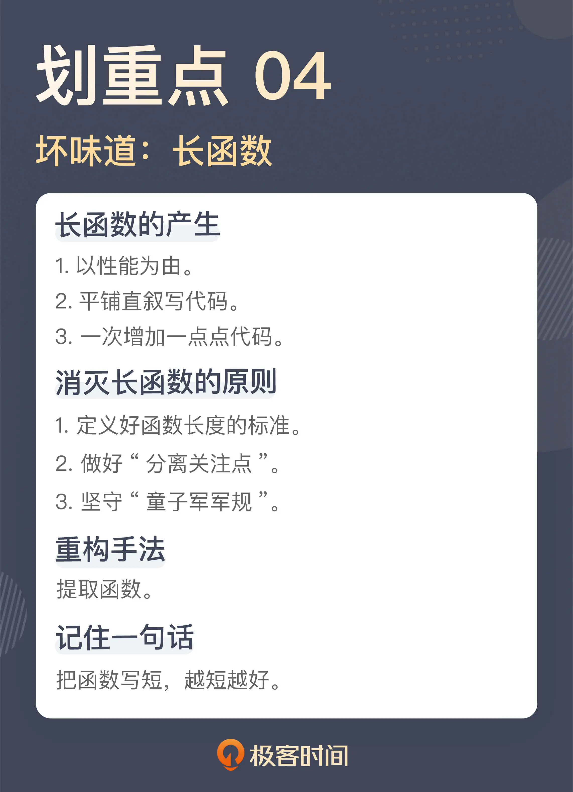

- 00 开篇词 这一次，我们从“丑”代码出发.md.html
- 01 缺乏业务含义的命名：如何精准命名？.md.html
- 02 乱用英语：站在中国人的视角来看英文命名.md.html
- 03 重复代码：简单需求到处修改，怎么办？.md.html
- 04 长函数：为什么你总是不可避免地写出长函数？.md.html
- 05 大类：如何避免写出难以理解的大类？.md.html
- 06 长参数列表：如何处理不同类型的长参数？.md.html
- 07 滥用控制语句：出现控制结构，多半是错误的提示.md.html
- 08 缺乏封装：如何应对火车代码和基本类型偏执问题？.md.html
- 09 可变的数据：不要让你的代码“失控”.md.html
- 10 变量声明与赋值分离：普通的变量声明，怎么也有坏味道？.md.html
- 11 依赖混乱：你可能还没发现问题，代码就已经无法挽救了.md.html
- 12 不一致的代码：为什么你的代码总被吐槽难懂？.md.html
- 13 落后的代码风格：使用“新”的语言特性和程序库升级你的代码.md.html
- 14 多久进行一次代码评审最合适？.md.html
- 15 新需求破坏了代码，怎么办？.md.html
- 16 熊节：什么代码应该被重构？.md.html
- 17 课前作业点评：发现“你”代码里的坏味道.md.html
- 结束语 写代码是一件可以一生精进的事.md.html
- 捐赠
04 长函数：为什么你总是不可避免地写出长函数？
你好，我是郑晔。
这一讲，我们来讲一个你一定深恶痛绝的坏味道：长函数。
有一个关于程序员的段子，说程序员一定要用大屏显示器，而且一定要竖起来用，这样才能看到一个函数的全貌。这显然是在调侃函数很长，小屏甚至横屏都不足以看到整个函数，只有竖起来才行。
只要一提到长函数，无论是去被迫理解一个长函数的含义，还是要在一个长函数中，小心翼翼地找出需要的逻辑，按照需求微调一下，几乎所有程序员都会有不愉悦的回忆。可以这么说，没有人喜欢长函数，但在实际工作中，却不得不去与各种长函数打交道。
不知道你在实际工作中遇到最长的函数有多长，几百上千行的函数肯定是不足以称霸的。在我的职业生涯中，经常是我以为自己够见多识广了，但只要新接触到一个有悠久历史的代码库，就总会有突破认知的长函数出现。
长函数是一个“我一说，你就知道怎么回事”的坏味道，我就不准备用一个典型的长函数来开启这一讲了，否则，这一讲的篇幅都不够了。但是，为了统一认识，我准备先讨论一下多长的函数算是长函数，我们来看一个案例。
多长的函数才算“长”？
有一次，我在一个团队做分享，讲怎么把一个长函数重构成小函数。现场演示之后，我问了大家一个问题：在你心目中，多长的函数才算长呢？
一个现场听众很认真地思考了一下，给出了一个答案：100 行。我很尴尬地看了一下自己刚刚重构掉的两个函数，最长的一个都不到 100 行。换言之，以他的标准来看，这个函数根本就不是长函数，根本就没有必要重构。
对于函数长度容忍度高，这是导致长函数产生的关键点。
如果一个人认为 100 行代码不算长，那在他眼中，很多代码根本就是没有问题的，也就更谈不上看到更多问题了，这其实是一个观察尺度的问题。这就好比，没有电子显微镜之前，人们很难理解疾病的原理，因为看不到病毒，就不可能理解病毒可以致病这个道理。
一个好的程序员面对代码库时要有不同尺度的观察能力，看设计时，要能够高屋建瓴，看代码时，要能细致入微。
这里的要点就是，看具体代码时，一定要能够看到细微之处。我在《[10x 程序员工作法]》专栏中讲到过“任务分解”，关键点就是将任务拆解得越小越好，这个观点对代码同样适用。随着对代码长度容忍度的降低，对代码细节的感知力就会逐渐提升，你才能看到那些原本所谓细枝末节的地方隐藏的各种问题。
回到具体的工作中，“越小越好”是一个追求的目标，不过，没有一个具体的数字，就没办法约束所有人的行为。所以，通常情况下，我们还是要定义出一个代码行数的上限，以保证所有人都可以按照这个标准执行。
我自己写代码的习惯是这样的。像 Python、Ruby 这样表达能力比较强的动态语言，大多数情况下，一行代码（one-liner program）可以解决很多问题，所以，我对自己的要求大约是 5 行左右，并且能够用一行代码解决的问题，就尽量会用一行代码解决；而像 Java 这样表达能力稍弱的静态类型语言，我也争取在 10 行代码之内解决问题。
当然，这是我对自己的要求，在实际的项目中，可能不是每个人都能做到这一点，所以，我给了一个更为宽松的限制，在自己的标准上翻了番，也就是 20 行。
这不是一个说说就算的标准，我们应该把它变成一个可执行的标准。比如，在 Java 中，我们就可以把代码行的约束加到 CheckStyle 的配置文件中，就像下面这样：
<module name="MethodLength">
<property name="tokens" value="METHOD_DEF"/>
<property name="max" value="20"/>
<property name="countEmpty" value="false"/>
</module>
这样，在我们提交代码之前，执行本地的构建脚本，就可以把长函数检测出来（关于 CheckStyle，我在《[10x 程序员工作法]》中讲[项目自动化]时专门做过介绍，你有兴趣不妨了解一下）。如果你用的是其它的程序设计语言，不妨也找一下相应的静态检查工具，看看是否提供类似的配置。
我知道，即便是以 20 行为上限，这也已经超过很多人的认知，具体的函数行数可以结合团队的实际情况来制定，但是，我非常不建议把这个数字放得很大，就像我前面说的那样，如果你放到 100 行，这个数字基本上是没有太多意义的，对团队也起不到什么约束作用。
我之所以要先讨论多长的函数算是长函数，是因为如果你不能认识到代码行的标准应该很低，那么在接下来的讨论中，有些代码示例可能在你看来，就根本不需要调整了。
长函数的产生
不过，限制函数长度，是一种简单粗暴的解决方案。最重要的是你要知道，长函数本身是一个结果，如果不理解长函数产生的原因，还是很难写出整洁的代码。接下来，我们就来看看长函数是怎么产生的。
人们写长函数的历史由来已久。在《软件设计之美》专栏里，我讲过[程序设计语言的发展历史]。像 C 语言这种在今天已经是高性能的程序设计语言，在问世之初，也曾被人质疑性能不彰，尤其是函数调用。
在一些写汇编语言的人看来，调用函数涉及到入栈出栈的过程，显然不如直接执行来得性能高。这种想法经过各种演变流传到今天，任何一门新语言出现，还是会以同样的理由被质疑。
所以，在很多人看来，把函数写长是为了所谓性能。不过，这个观点在今天是站不住的。性能优化不应该是写代码的第一考量。
一方面，一门有活力的程序设计语言本身是不断优化的，无论是编译器，还是运行时，性能都会越来越好；另一方面，可维护性比性能优化要优先考虑，当性能不足以满足需要时，我们再来做相应的测量，找到焦点，进行特定的优化。这比在写代码时就考虑所谓性能要更能锁定焦点，优化才是有意义的。
除了以性能为由把代码写长，还有一种最常见的原因也会把代码写长，那就是写代码平铺直叙，把自己想到的一点点罗列出来。比如下面这段代码（如果你不想仔细阅读，可以直接跳到后面）：
public void executeTask() {
ObjectMapper mapper = new ObjectMapper();
CloseableHttpClient client = HttpClients.createDefault();
List<Chapter> chapters = this.chapterService.getUntranslatedChapters();
for (Chapter chapter : chapters) {
SendChapterRequest sendChapterRequest = new SendChapterRequest();
sendChapterRequest.setTitle(chapter.getTitle());
sendChapterRequest.setContent(chapter.getContent());
HttpPost sendChapterPost = new HttpPost(sendChapterUrl);
CloseableHttpResponse sendChapterHttpResponse = null;
String chapterId = null;
try {
String sendChapterRequestText = mapper.writeValueAsString(sendChapterRequest);
sendChapterPost.setEntity(new StringEntity(sendChapterRequestText));
sendChapterHttpResponse = client.execute(sendChapterPost);
HttpEntity sendChapterEntity = sendChapterPost.getEntity();
SendChapterResponse sendChapterResponse = mapper.readValue(sendChapterEntity.getContent(), SendChapterResponse.class);
chapterId = sendChapterResponse.getChapterId();
} catch (IOException e) {
throw new RuntimeException(e);
} finally {
try {
if (sendChapterHttpResponse != null) {
sendChapterHttpResponse.close();
}
} catch (IOException e) {
}
}
HttpPost translateChapterPost = new HttpPost(translateChapterUrl);
CloseableHttpResponse translateChapterHttpResponse = null;
try {
TranslateChapterRequest translateChapterRequest = new TranslateChapterRequest();
translateChapterRequest.setChapterId(chapterId);
String translateChapterRequestText = mapper.writeValueAsString(translateChapterRequest);
translateChapterPost.setEntity(new StringEntity(translateChapterRequestText));
translateChapterHttpResponse = client.execute(translateChapterPost);
HttpEntity translateChapterEntity = translateChapterHttpResponse.getEntity();
TranslateChapterResponse translateChapterResponse = mapper.readValue(translateChapterEntity.getContent(), TranslateChapterResponse.class);
if (!translateChapterResponse.isSuccess()) {
logger.warn("Fail to start translate: {}", chapterId);
}
} catch (IOException e) {
throw new RuntimeException(e);
} finally {
if (translateChapterHttpResponse != null) {
try {
translateChapterHttpResponse.close();
} catch (IOException e) {
}
}
}
}
这段代码的逻辑是，把没有翻译过的章节发到翻译引擎，然后，启动翻译过程。在这里翻译引擎是另外一个服务，需要通过 HTTP 的形式向它发送请求。相对而言，这段代码还算直白，当你知道了我上面所说的逻辑，你是很容易看懂这段代码的。
这段代码之所以很长，主要原因就是把前面所说的逻辑全部平铺直叙地摆在那里了，这里既有业务处理的逻辑，比如，把章节发送给翻译引擎，然后，启动翻译过程；又有处理的细节，比如，把对象转成 JSON，然后，通过 HTTP 客户端发送出去。
从这段代码中，我们可以看到平铺直叙的代码存在的两个典型问题：
把多个业务处理流程放在一个函数里实现；
把不同层面的细节放到一个函数里实现。
这里发送章节和启动翻译是两个过程，显然，这是可以放到两个不同的函数中去实现的，所以，我们只要做一下提取函数，就可以把这个看似庞大的函数拆开，而拆出来的几个函数规模都会小很多，像下面这样：
public void executeTask() {
ObjectMapper mapper = new ObjectMapper();
CloseableHttpClient client = HttpClients.createDefault();
List<Chapter> chapters = this.chapterService.getUntranslatedChapters();
for (Chapter chapter : chapters) {
String chapterId = sendChapter(mapper, client, chapter);
translateChapter(mapper, client, chapterId);
}
}
拆出来的部分，实际上就是把对象打包发送的过程，我们以发送章节为例，先来看拆出来的发送章节部分：
private String sendChapter(final ObjectMapper mapper,
final CloseableHttpClient client,
final Chapter chapter) {
SendChapterRequest request = asSendChapterRequest(chapter);
CloseableHttpResponse response = null;
String chapterId = null;
try {
HttpPost post = sendChapterRequest(mapper, request);
response = client.execute(post);
chapterId = asChapterId(mapper, post);
} catch (IOException e) {
throw new RuntimeException(e);
} finally {
try {
if (response != null) {
response.close();
}
} catch (IOException e) {
}
}
return chapterId;
}
private HttpPost sendChapterRequest(final ObjectMapper mapper, final SendChapterRequest sendChapterRequest) throws JsonProcessingException, UnsupportedEncodingException {
HttpPost post = new HttpPost(sendChapterUrl);
String requestText = mapper.writeValueAsString(sendChapterRequest);
post.setEntity(new StringEntity(requestText));
return post;
}
private String asChapterId(final ObjectMapper mapper, final HttpPost sendChapterPost) throws IOException {
String chapterId;
HttpEntity entity = sendChapterPost.getEntity();
SendChapterResponse response = mapper.readValue(entity.getContent(), SendChapterResponse.class);
chapterId = response.getChapterId();
return chapterId;
}
private SendChapterRequest asSendChapterRequest(final Chapter chapter) {
SendChapterRequest request = new SendChapterRequest();
request.setTitle(chapter.getTitle());
request.setContent(chapter.getContent());
return request
}
当然，这个代码还算不上已经处理得很整洁了，但至少同之前相比，已经简洁了一些。我们只用了最简单的提取函数这个重构手法，就把一个大函数拆分成了若干的小函数。
顺便说一下，长函数往往还隐含着一个命名问题。如果你看修改后的 sendChapter，其中的变量命名明显比之前要短，理解的成本也相应地会降低。因为变量都是在这个短小的上下文里，也就不会产生那么多的命名冲突，变量名当然就可以写短一些。
平铺直叙的代码，一个关键点就是没有把不同的东西分解出来。如果我们用设计的眼光衡量这段代码，这就是“分离关注点”没有做好，把不同层面的东西混在了一起，既有不同业务混在一起，也有不同层次的处理混在了一起。我在《软件设计之美》专栏中，也曾说过，关注点越多越好，粒度越小越好。
有时，一段代码一开始的时候并不长，就像下面这段代码，它根据返回的错误进行相应地错误处理：
if (code == 400 || code == 401) {
}
然后，新的需求来了，增加了新的错误码，它就变成了这个样子：
if (code == 400 || code == 401 || code == 402) {
}
你知道，一个有生命力的项目经常会延续很长时间，于是，这段代码有很多次被修改的机会，日积月累，它就成了让人不忍直视的代码，比如：
if (code == 400 || code == 401 || code == 402 || ...
|| code == 500 || ...
|| ...
|| code == 10000 || ...) {
}
后来人看到这段代码就想骂人了。当他从版本控制的历史中找到这些代码的作者，去询问这些处理的来龙去脉时，每个人其实都很委屈，他们当时也没做太多，只是加了一个判断条件而已。
任何代码都经不起这种无意识的累积，每个人都没做错，但最终的结果很糟糕。对抗这种逐渐糟糕腐坏的代码，我们需要知道“童子军军规”：
Robert Martin 把它借鉴到了编程领域，简言之，我们应该看看自己对于代码的改动是不是让原有的代码变得更糟糕了，如果是，那就改进它。但这一切的前提是，你要能看出自己的代码是不是让原有的代码变得糟糕了，所以，学习代码的坏味道还是很有必要的。
至此，我们看到了代码变长的几种常见原因：
你会发现，代码变长根本是一个无意识的问题，写代码的人没有觉得自己把代码破坏了。但只要你认识到长函数是一个坏味道，后面的许多问题就自然而然地会被发掘出来，至于解决方案，你已经看到了，大部分情况下，就是拆分成各种小函数。
总结时刻
今天我们讲了程序员最深恶痛绝的坏味道：长函数。没有人愿意去阅读长函数，但许多人又会不经意间写出长函数。
毫无疑问，长函数是一个坏味道。对于团队而言，一个关键点是要定义出长函数的标准。不过，过于宽泛的标准是没有意义的，想要有效地控制函数规模，几十行的函数已经是标准的上限了，这个标准越低越好。
我们还分析了长函数产生的原因：
有人以性能为借口；
有人把代码平铺直叙地摊在那里；
有人只是每次增加了一点点。
其中，平铺直叙是把函数写长最常见的原因。之所以会把代码平摊在那里，一方面是把多个业务写到了一起，另一方面是把不同层次的代码写到了一起。究其根因，那是“分离关注点”没有做好。
每次增加一点点，是另外一个让代码变长的原因，应对它的主要办法就是要坚守“童子军军规”，但其背后更深层次的支撑就是要对坏味道有着深刻的认识。
如果今天的内容你只能记住一件事，那请记住：把函数写短，越短越好。

思考题
你在实际的工作中遇到过长函数吗？讲讲你和长函数斗争的故事，欢迎在留言区写下你的经历。如果你身边有人正在为“长函数”苦恼，也欢迎你把这节课分享给他。
感谢阅读，我们下一讲再见！
© 2019 - 2023 Liangliang Lee. Powered by gin and hexo-theme-book.